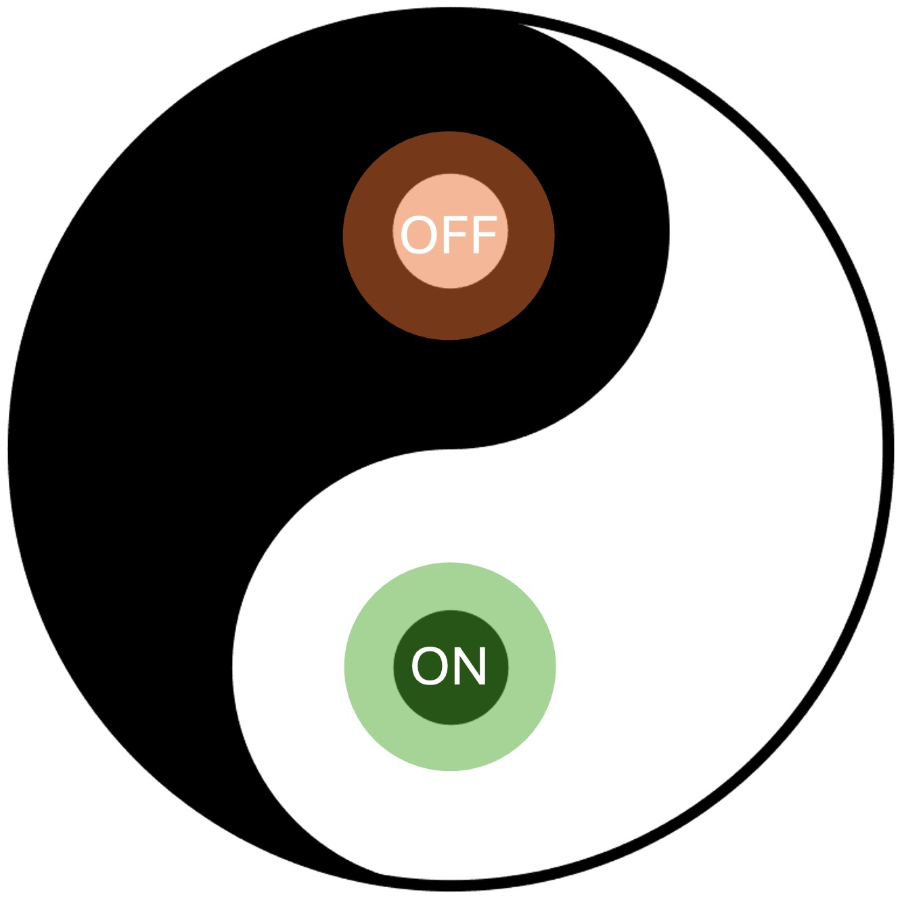
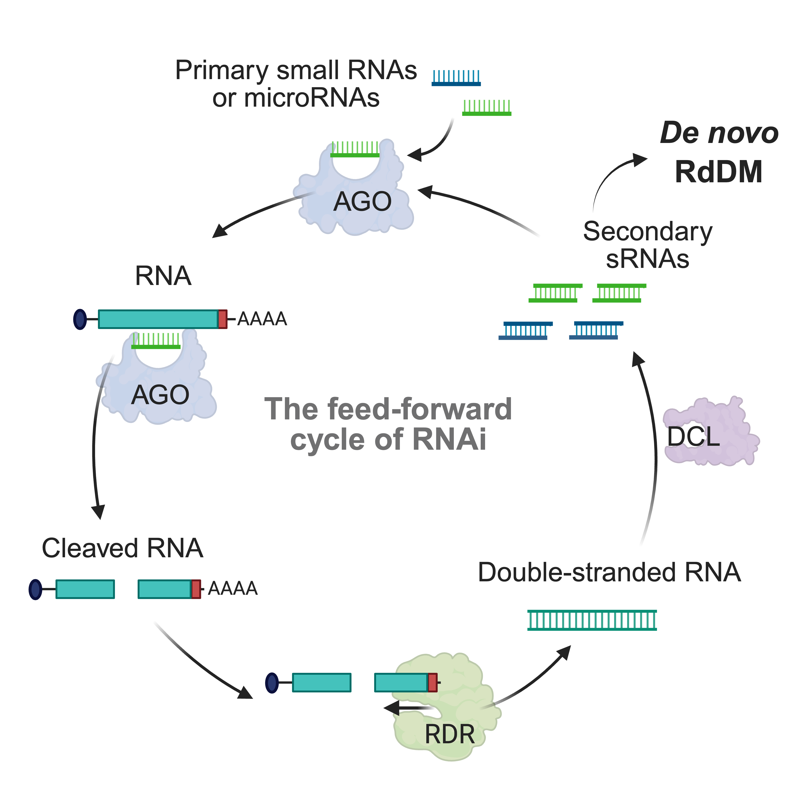
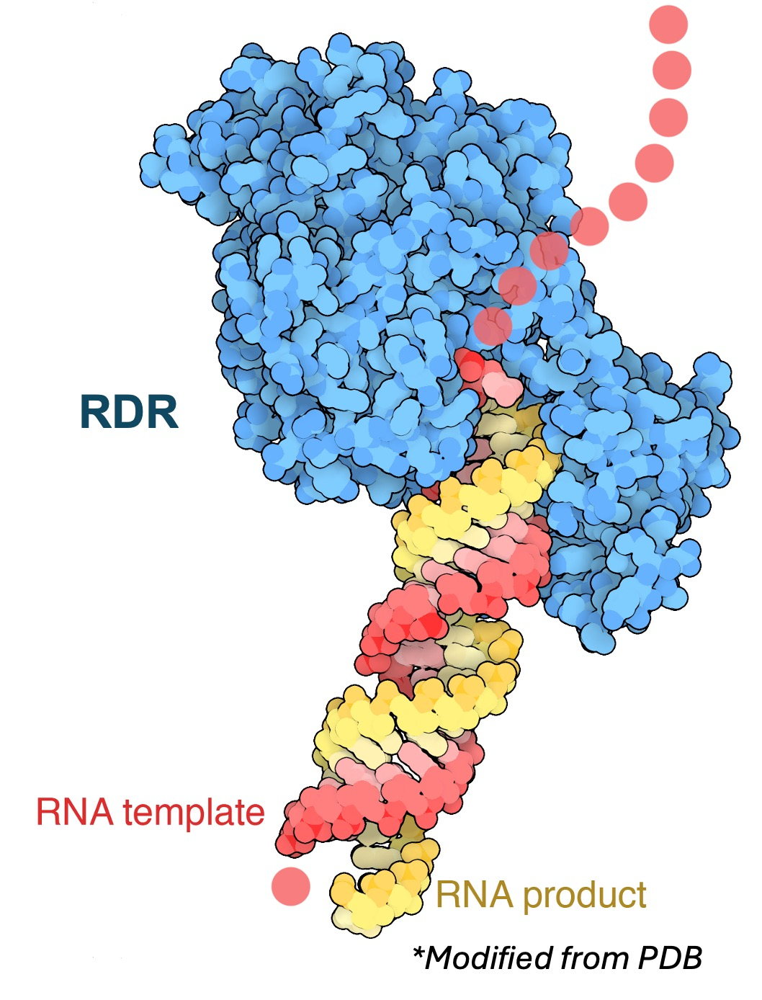
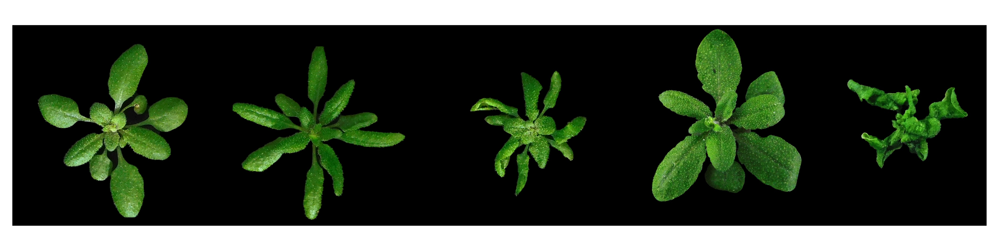
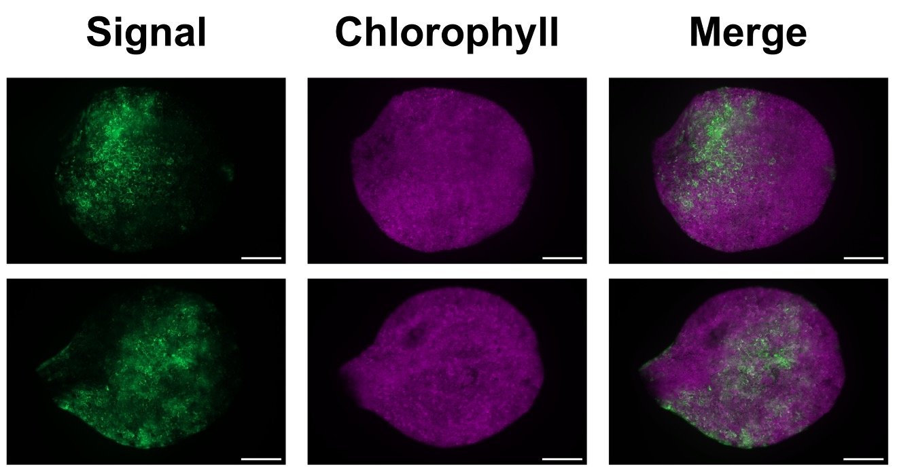
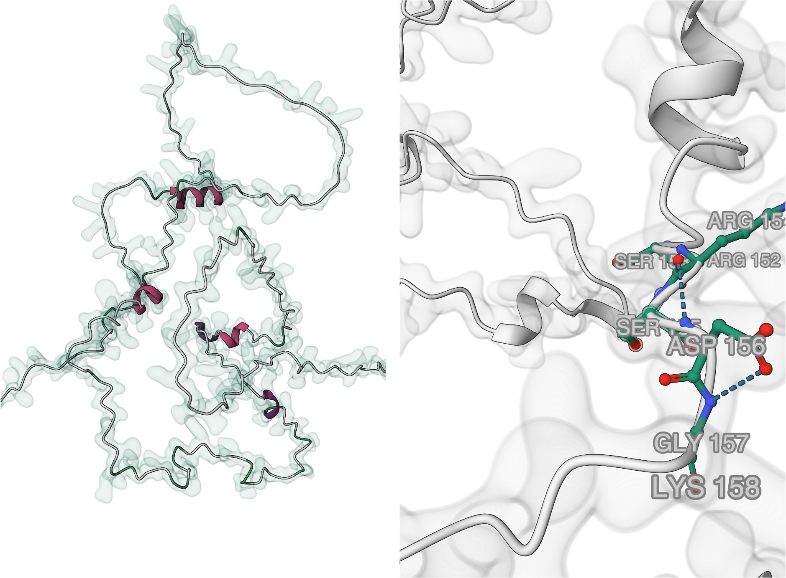

About Me
I am a Ph.D. Candidate and William H. Danforth Plant Sciences Fellow at the DBBS, Washington University in St. Louis and Donald Danforth Plant Science Center working with Dr. R. Keith Slotkin. My research focuses on understanding the fundamental difference between elements in the genome that need to be "silenced" (transposons) versus ones that need to be kept active (genes), this differentiation forms the basis of genome integrity. My goal is to identify and elucidate the biogenesis of primary small RNAs that initiate RNAi and subsequent epigenetic silencing of transgenes, viruses and transposons.
Previously, I had the privilege of being a Khorana Scholar at MIT, working with Dr. Mary Gehring on pathways regulating genome dosage sensitivity in the endosperm of Arabidopsis, which inspired me to further my research in plant epigenetics. Prior to grad school, I also had a short industry stint as a Competitive Intelligence Analyst at Bayer Crop Science, where I worked on Science Competitive Intelligence & Prospecting in the gene editing space.
I received my M.Sc. in Plant Physiology and Biochemistry (Gold Medal) from Indian Agricultural Research Institute, New Delhi, and my B.Sc. in Agriculture Biotechnology from University of Agricultural Sciences, Bangalore. Throughout my undergraduate period, I worked on annotation of a Domain of Unknown Function (DUF) protein specific to plants with Prof. Sowdhamini Ramanathan and Dr. Viswanathan Chinnusamy.
I'm also part of the Next Gen Scientists Foundation (NGSF), where we strive to make science accessible to undergraduates in India who lack access to research laboratories. We follow a unique student-funded model to support internships at top research institutions across India.
My current research interests include:
- Fundamental understanding of initiation of epigenetic silencing mechanisms
- Understanding regulation of transposons in the genome and the use of transposons for genome engineering
- CRISPR-based genome engineering in plants, especially large-scale genome tweaking and its applications
- I'm very excited and optimistic about the possibilities of AI-assisted engineering of biology and biological processes, especially synthesizing novel genomes and proteins!
Research Areas
Initiation of Silencing
The Central Question
A fundamental question in biology is how cells distinguish self from non-self genetic elements. How do sophisticated silencing pathways selectively target non-self elements like viruses and transgenes while sparing endogenous genes? Complicating this further are transposable elements (TEs) - intrinsic genomic parasites that must be silenced despite being part of the organism's own DNA, as their mobilization can disrupt genes and genome function.

DNA Methylation and the RdDM Pathway

DNA methylation acts like molecular icing on a cake, adding an epigenetic layer that dictates which genomic regions are expressed and which remain silent by regulating chromatin structure and accessibility. In plants, RNA-directed DNA Methylation (RdDM) deposits methylation marks de novo. While we understand the RdDM mechanism well, a critical gap remains: what triggers this pathway for the very first time? Studies suggest small RNAs from the RNAi (RNA Interference) feed-forward cycle initiate the process, but the identity of the original trigger remains elusive across all biological systems.
My research focuses on identifying these elusive "primary small RNAs" that initiate the RNAi feed-forward cycle, establishing DNA methylation and long-term chromatin modifications that lead to stable epigenetic silencing.
My Approach
I use genetics, genomics, and biochemical techniques to answer what primary small RNAs are and how they are generated. I created Arabidopsis plants that are null mutants for genes encoding RNA Dependent RNA Polymerases, which act as amplifiers of primary small RNA signals and generate multiple copies of secondary small RNAs, making it difficult to identify and characterize the primary small RNAs that trigger RNAi. I also collaborate with data scientists in the lab to use machine learning approaches to identify aberrant and antisense transcripts that could generate primary small RNAs.

Why Arabidopsis?
I use Arabidopsis thaliana because it's exceptionally suited for genetic manipulation and has vast resources of mutants and genomic information. Since my work relies heavily on genetic approaches, Arabidopsis can survive more severe genetic alterations compared to other models. The findings also translate well to crops, helping tackle transgene silencing that causes significant economic losses to farmers and industry. Plus, plants are a fantastic system to study transposons - they were first discovered in corn by Barbara McClintock in the 1940s.

Genome Engineering and Technology Development
CRISPR has become my go-to tool for generating mutants in Arabidopsis—whether single mutants or complex combinations. During the early years of my PhD, I was lucky to be part of the team developing transposase-assisted target-site integration, which ended up being published in Nature (pretty cool!).
These days, I'm constantly experimenting with different transformation techniques—protoplast transformation, transient transformation of Arabidopsis seedlings—basically whatever works best to develop high-throughput screening tools for genome editing outcomes.
During my graduate school rotations, I also got to play around with targeted methylation using CRISPR/SunTag systems for epigenome engineering, with the goal of engineering viral disease resistance in plants.

Annotation of Domain of Unknown Function Proteins (DUFs)

During my undergraduate and master's research, I investigated the role of DUF1645 proteins in multiple stress tolerance and grain yield in rice. Our work revealed DUF1645 as a novel intrinsically disordered transcription factor family specific to plants, contributing to our understanding of plant stress responses at the molecular level.
I used various computational tools and publicly available transcriptome data extensively to annotate the DUF1645 protein family. I was fortunate to work with multiple protein structure prediction tools prior to AlphaFold during my undergraduate research, and then validate my computational findings through wet-lab experiments during my master's thesis work.
Intrinsically disordered proteins continue to capture my attention and interest, and I hope to return to studying them in the future!
Publications
A transposable element insertion in AUX/IAA16 disrupts splicing and causes auxin resistance in Bassia scoparia
Transposase-assisted target-site integration for efficient plant genome engineering
Nitrate supply regulates tissue calcium abundance and transcript level of Calcineurin B-like (CBL) gene family in wheat
Photosynthetic machinery under salinity stress: Trepidations and adaptive mechanisms
Genome Editing Targets for Improving Nutrient Use Efficiency and Nutrient Stress Adaptation
Functional annotation of hypothetical proteins involved in multiple stress response in Oryza sativa
My Academic Journey
Ph.D. Candidate
Washington University & Donald Danforth Plant Science Center, St. Louis
William H. Danforth Plant Sciences Fellow
Advisor: R. Keith Slotkin
Thesis: Primary small RNAs that initiate epigenetic silencing in Arabidopsis
Competitive Intelligence Analyst
Bayer Crop Science
Science Competitive Intelligence & Prospecting
Khorana Scholar
Massachusetts Institute of Technology (MIT), Cambridge, USA
Dept. of Biology & Whitehead Institute for Biomedical Research
Advisor: Mary Gehring
Project: Pathways regulating genome dosage sensitivity in the endosperm of Arabidopsis
M.Sc. in Plant Physiology
Indian Agricultural Research Institute, New Delhi
Gold Medal
Advisor: Viswanathan Chinnusamy
Thesis: Investigating the role of DUF1645 proteins in abiotic stress tolerance and grain yield in rice
Bachelor's Dissertation
National Centre for Biological Sciences (NCBS), Bangalore
Advisor: R. Sowdhamini
Thesis: Structural and functional annotation of multiple stress responsive hypothetical proteins in rice
JNCASR Summer Research Fellow
Centre for Cellular and Molecular Biology (CCMB), Hyderabad
Advisor: Imran Siddiqi
Project: Development of fluorescent tag-based cell cycle marker system in Arabidopsis
Indian Academy of Sciences Summer Research Fellow
University of Delhi (South Campus), New Delhi
Advisor: Surekha Agarwal
Project: Identified and cloned a tetraspanin gene from Oryza sativa
B.Sc. Agriculture Biotechnology
University of Agricultural Sciences, Bangalore
Merit Scholarship recipient
Thesis: Structural and functional annotation of multiple stress responsive hypothetical proteins in rice